| Country | Landings (t) | Discards (t) | age distributions | Fish measured |
|---|---|---|---|---|
| Netherlands | 810.2 | 73.6 | 0 | 0 |
| Denmark | 235.3 | 0.1 | 0 | 0 |
| Germany | 210.0 | 2.7 | 0 | 0 |
| Belgium | 152.8 | 7.5 | 0 | 0 |
| UK (England) | 130.8 | 0.0 | 0 | 0 |
| UK(Scotland) | 107.0 | 0.5 | 0 | 0 |
| Norway | 21.9 | 0.0 | 0 | 0 |
| Sweden | 1.4 | 0.0 | 0 | 0 |
| France | 0.1 | 0.0 | 0 | 0 |
| UK(Northern Ireland) | 0.0 | 0.0 | 0 | 0 |
| Total | 1,669.5 | 84.4 | 0 | 0 |
Stock coordination of turbot in the North Sea (tur.27.4)
From the converted InterCatch data to the Catch Combined and the Distributions Combined, catch year 2025 (WGNSSK 2026)
1 The stock coordination in short
The stock coordination is the step between the national data and the stock assessment. Every country reports what its fleets caught of the stock, by stratum - a combination of country, catch category (landings or discards), season, area and fleet - and what was measured of it: the age distribution of the fish that were sampled. Two things are missing from that picture. Discards are observed by sampling programmes, so not every stratum that lands brill has a discard estimate. And age samples are taken in a part of the strata only. The stock coordinator fills in both and adds everything up into the two tables that the stock coordination format (SCF v4) asks for:
- Catch Combined (CC): the catch of the stock in tonnes, by year and catch category;
- Distributions Combined (DC): the numbers (in thousands of fish) and the mean weight (in g) at age of that catch, by catch category.
This report follows the data of brill in Subarea 4 and divisions 3.a and 7.d-e (Scophthalmus rhombus, bll.27.3a47de) from the InterCatch files of the working group for the catch year 2025 to those two tables, in the steps below. Everything is done in R with the package rcef: the raising and the allocation use the functions of the RDBESStockCoord framework (catchRaising() and catchAllocationAoL()), the two final tables are made by catchCombined() and distributionsCombined(), and the figures come from the exploration functions of the package.
The steps are the scripts of the TAF project, run in this order; each leaves the files the next one reads:
- Data (
data.R): the InterCatch data are converted to the CEF format and the columns the groups are written on are derived. Files:data/catch_data_CEF.csvanddata/distributions_data_CEF.csv. - Discard raising (
model_discard_raising.R): the landings without a discard estimate get one, from the discard ratio of a group of comparable strata. File:model/catch_data_raised.csv. - age allocation (
model_age_allocation.R): every stratum without a age distribution gets one, from the distributions of a group of comparable strata. Files:model/catch_data_allocated.csvandmodel/distributions_data_allocated.csv. - Aggregation (
output.R): the raised catch and the allocated distributions are added up into the CC and the DC. Files:output/SCF_CC.csvandoutput/SCF_DC.csv. - Report (
report.Randreport.qmd): this document, made from the files above and the figures the scripts saved. Files:report/report.htmlandreport/report.pdf.
A few words are used throughout:
- a stratum is a row of the catch table: country, catch category, season, area and fleet;
- a catch row is imported when it is in the data as it came and raised when the raising added it;
- a age distribution is sampled when fish were measured and estimated when the allocation made it;
- a group is a set of strata that are raised, or allocated, together; its donors (the matched data) are the strata its ratio, or its distribution, is taken from;
- a domain is a set of strata that share an estimate:
domainCatchDisties a landings row to its discard estimate anddomainBiologyties a stratum to its age distribution.
In numbers. The catch of the stock for 2025 is 1,777.3 t: 1,669.5 t of landings and 107.8 t of discards, of which 84.4 t were reported and 23.4 t raised. The allocation gave a age distribution to all 298 catch rows: 46 sampled ones (0 fish measured) and 252 estimated ones; by weight, 39% of the landings and 9% of the discards have a sampled distribution. The DC holds the numbers and the mean weights of 18 age classes of landings and 4 of discards.
2 The data: the converted InterCatch data
2.1 From InterCatch to the CEF format
The data are the InterCatch data of the working group for 2025: the overview files that InterCatch writes for the stock (the stock overview, the catch and sample data tables and the numbers at age). funICoutCEF() converts them to the Common Exchange Format (CEF v17.1), the long format of the national estimates of the RDBES:
- the catch table, a row for each stratum, catch category, origin and variable, with the weight of the catch (
total) and the domains that tie it to its discard estimate and to its age distribution; - the distribution table, a
Numberrow and aWeightLiverow (the mean weight) for each age class of each sampled distribution, with the number of fish measured; - an effort table, which is not used here.
derive_fields() then adds the columns the groups are written on: the metier levels (metier4, the gear, down to metier6), mesh, the ICES area levels and a Stratum key. It is run once, in data.R, and everything after it reads those columns.
2.2 What the data hold
The converted catch table has 374 records of 10 countries, in 4 areas and 34 fleets. The working group’s own estimate (originType = WGEstimate) is what is raised and added up: 1,669.5 t of landings and 84.4 t of discards that were reported. The 24 rows of origin Official weigh 0.0 t and the 24 rows of landings below the minimum size (BMS) 0.0 t, so neither matters here. The distribution table has 0 age distributions with 0 fish measured; it has no age distributions. Table 1 shows where they come from.
The beam trawls (TBB) and the otter trawls (OTB) land most of the brill, and with the trammel nets (GTR) they also have most of the discards that were reported (Figure 1).
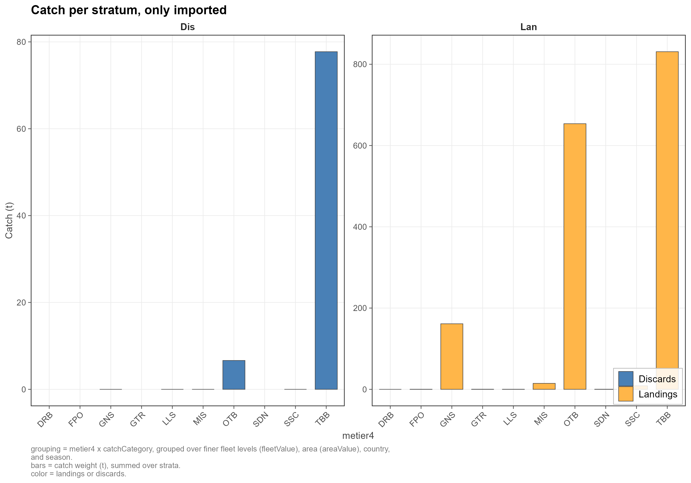
discard_raising_01.png.
3 Discard raising
3.1 How the raising works
Discards are known only where somebody observed them, so only some of the strata that land brill have a discard estimate: about three quarters of the landings are in such strata (Figure 2). For the others the discards are raised: a landings row without a discard estimate gets a discards row equal to its landings times a discard ratio (discards divided by landings), taken from a group of comparable strata, its donors.
The comparable strata are written down by hand as raising groups. A group is a pair of conditions on the columns of the catch table:
- the raising strata: the landings that are raised together. A landing is in one group only:
check_group_conditions()stops at a landing that falls in two groups and reports one that falls in none; - the matched data: the strata whose landings and discards give the ratio of the group. They are often the raising strata themselves, but they can be a wider pool when the group has too little discard data of its own, and the pools of different groups may overlap.
The ratio is the total discards over the total landings of the donors that have a discard estimate, so the large strata weigh more. Everything else is kept as it came. The result of catchRaising() is the catch table with the raised discards added, each row marked imported or raised and carrying the name of its group.
3.2 Looking at the data to define the groups
The groups follow what the data say about where discards are observed and how large they are.
Where are discards observed? The beam trawls and the otter trawls, which land most of the brill, have most of their landings in strata with a discard estimate; many small fleets have none (Figure 2). Taken by gear group and mesh (Figure 3), most of the landings of the beam trawls (G1), the nets (G2) and the otter trawls (G3) are in tiles with at least half of the landings covered (green). The rest of the fleets (G4) are sparsely sampled and need the pool of all the others.
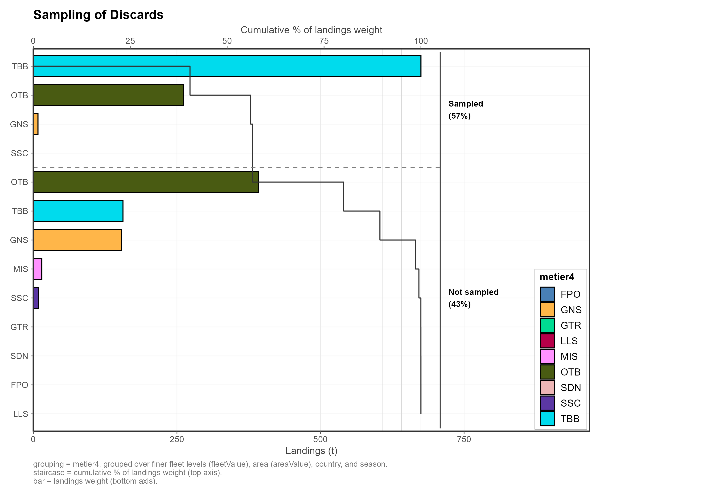
discard_raising_02.png.
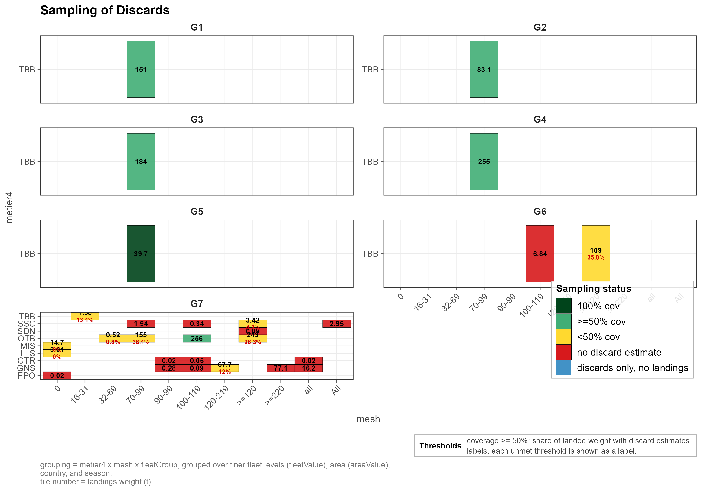
discard_raising_04.png.
How large are they? The discard ratio of the strata that were sampled is low and steady for the beam trawls and higher, and more scattered, for the nets and the otter trawls, where the few strata above 50% are nearly all in the Kattegat (27.3.a.21) (Figure 4).
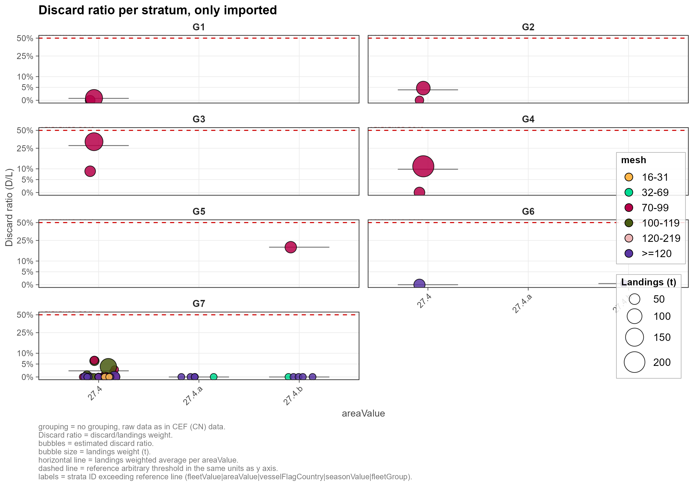
discard_raising_06.png.
What explains them? The strata were clustered by their discard rate, and the variables that best predict the cluster are the area, the mesh and the gear; the season is the weakest (Figure 5). Gear is the main axis of the groups, and the area is what the alternative below adds.
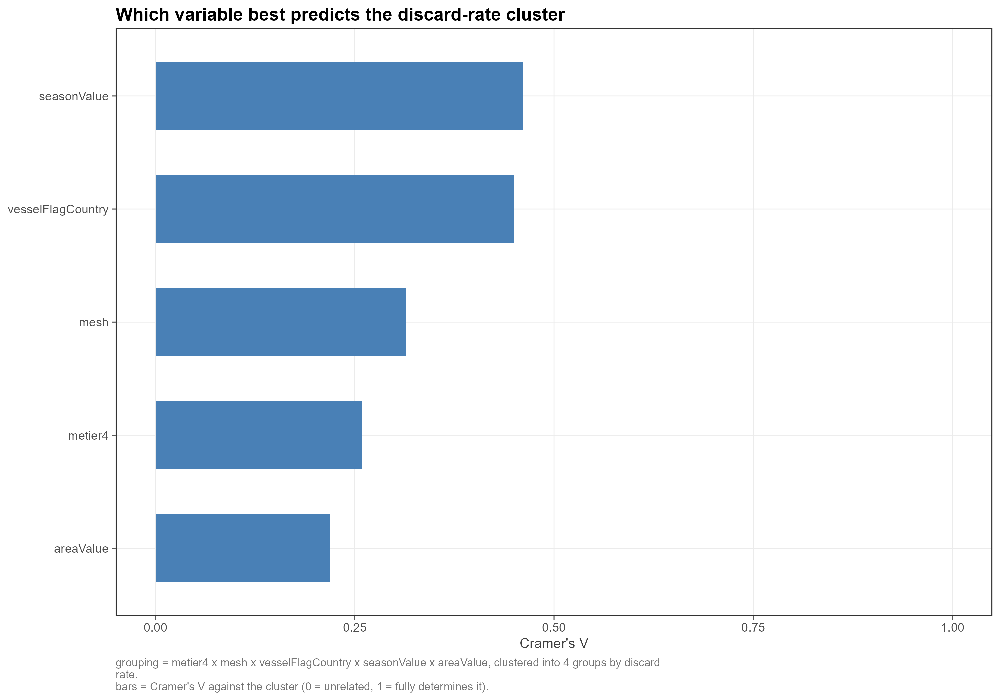
discard_raising_08.png.
3.3 The usual method
The usual method has five groups, by gear (Table 2). Here is the code of the script, model_discard_raising.R:
(this code is no longer in the script)
(this code is no longer in the script)
| Group | Raising strata | Donors | Why |
|---|---|---|---|
| G1_TBB | Beam trawls (TBB) | The same strata | Well sampled; a low and steady ratio. |
| G2_GTR_GNS | Gillnets and trammel nets (GNS, GTR) | The same strata | Sampled in part; the ratio differs from the others. |
| G3_OTB_SSC_SDN | Otter trawls and seines (OTB, SSC, SDN) | The same strata | Well sampled in part; the ratio varies with area and mesh. |
| G4_REST | All other metiers (dredges, pots, lines, unclassified), except the incidental bycatch fleet | All strata but the incidental bycatch, minus the strata whose own discard ratio is above 50% (the MIS metier excepted) | Too little discard data of its own: it draws on all the fleets, without the strata that look implausible. |
| G5_IBC | The incidental bycatch fleet (MIS_MIS_0_0_0_IBC) |
The same strata | No landings: there is nothing to raise. |
The raising adds 23.4 t of discards to the 84.4 t that were reported, 107.8 t in all, of which 22% is raised (Table 3). The ratios the raised discards used are in the last column; Figure 6 shows them as crosses among the imported strata of their group.
| Group | Landings (t) | With a discard estimate (%) | Discards imported (t) | Discards raised (t) | Ratio used (%) |
|---|---|---|---|---|---|
| G1 | 151.5 | 90 | 1.0 | 0.1 | 0.7 |
| G2 | 83.1 | 93 | 3.1 | 0.2 | 4.0 |
| G3 | 183.9 | 87 | 44.5 | 6.7 | 27.8 |
| G4 | 255.2 | 87 | 21.7 | 3.3 | 9.8 |
| G5 | 39.7 | 100 | 7.5 | 0.0 | - |
| G6 | 116.0 | 34 | 0.0 | 0.0 | 0.0 |
| G7 | 840.2 | 32 | 6.6 | 13.1 | 2.3 |
| Total | 1,669.5 | 56 | 84.4 | 23.4 | - |
The 24 raised rows of G5 have no donor and raise to nothing.
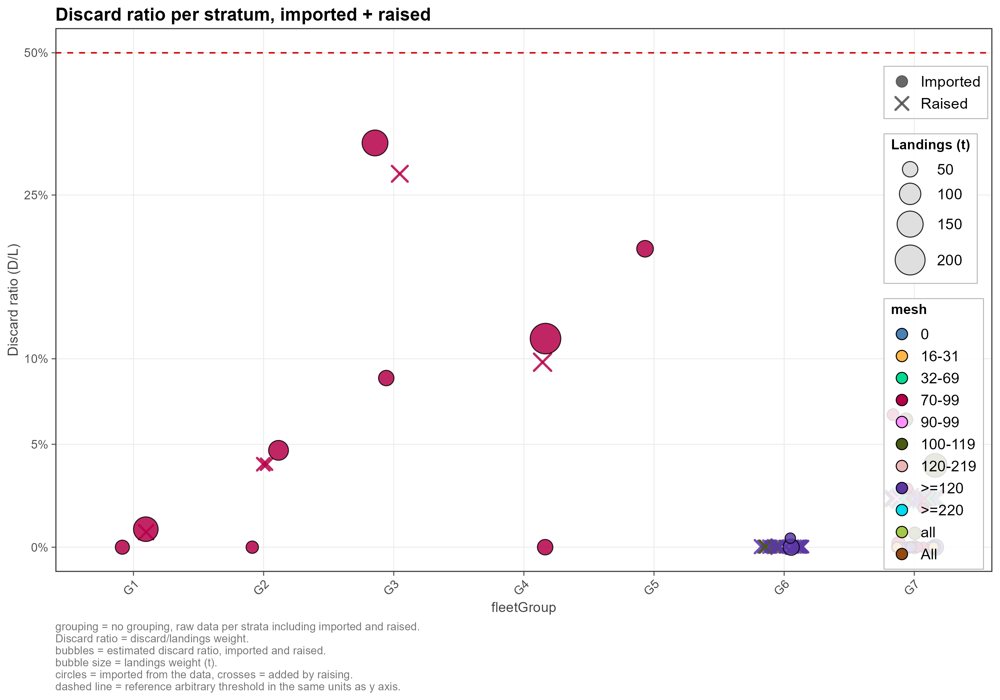
discard_raising_09.png.
3.4 The alternative: the Kattegat on its own
The discard ratios of the nets and the otter trawls in the Kattegat (27.3.a.21) are much higher than elsewhere (Figure 4), and these fleets are well sampled there (Figure 7). In the alternative, called usual method with 3.a.21, the Kattegat strata of G2 and G3 are groups of their own, G2b and G3b, raised from the strata of the same gears in 27.3.a.21 only; the other groups are those of the usual method (Table 4).
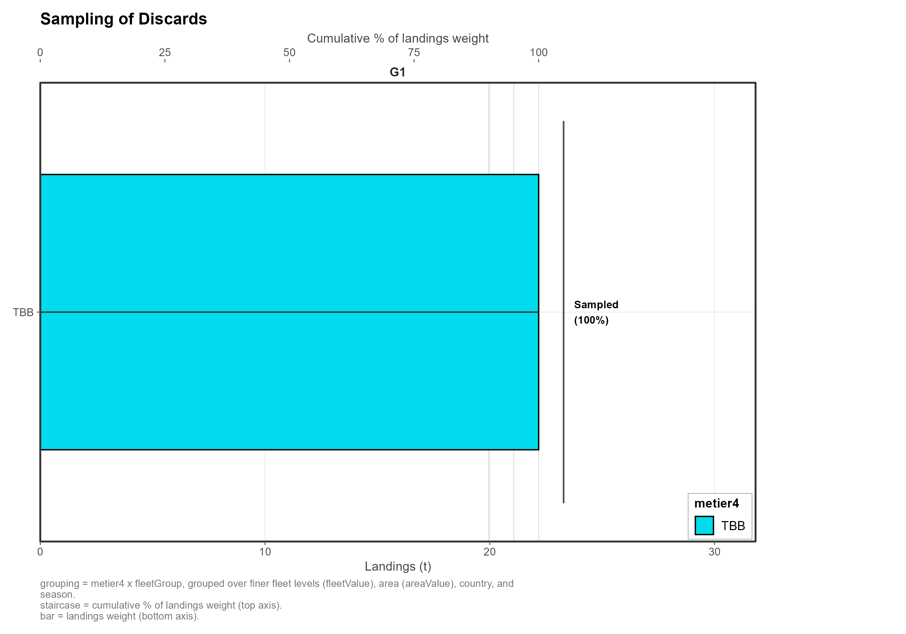
discard_raising_14.png.
(this code is no longer in the script)
(this code is no longer in the script)
| Group | Raising strata | Donors | Why |
|---|---|---|---|
| G2_GTR_GNS | Nets outside 27.3.a.21 | The same strata | The ratio of the rest of the area. |
| G2b_GTR_GNS_3a21 | Nets in 27.3.a.21 | The same strata (27.3.a.21 only) | A higher ratio, well sampled. |
| G3_OTB_SSC_SDN | Otter trawls and seines outside 27.3.a.21 | The same strata | The ratio of the rest of the area. |
| G3b_OTB_SSC_SDN_3a21 | Otter trawls and seines in 27.3.a.21 | The same strata (27.3.a.21 only) | A higher ratio, well sampled. |
The strata of G2b and G3b are now raised at the level of their own sampled neighbours in the Kattegat, higher than the rest of their gear (Figure 8).
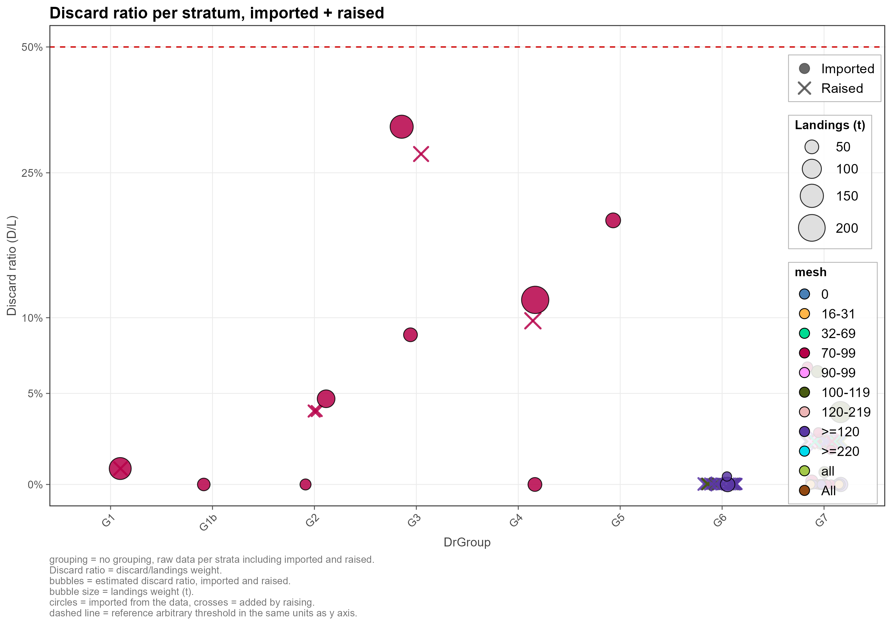
discard_raising_18.png.
3.5 The two methods compared
The comparison table of the two methods is saved by model_discard_raising.R in output/raising_scenarios_comparison.csv: run the script to have it here. The figure below compares the two.
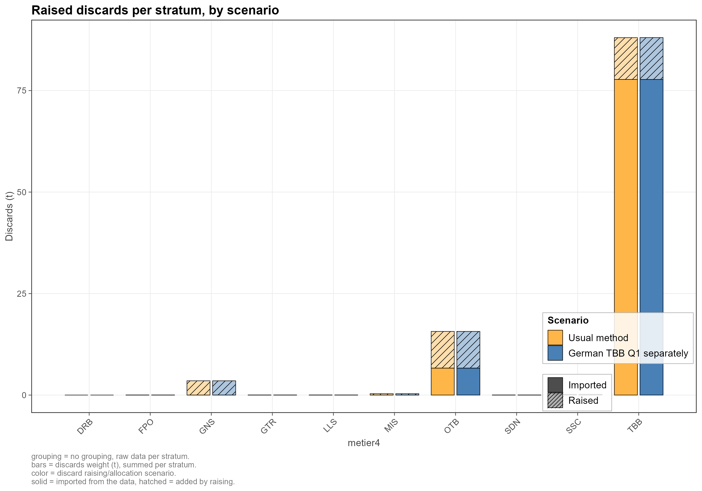
discard_raising_20.png.
The CC and the DC below are made from the usual method: it is the raising that model_discard_raising.R saves in model/catch_data_raised.csv, which the aggregation reads. The alternative is kept as a comparison.
4 age allocation
4.1 How the allocation works
After the raising every stratum has a catch weight, but a age distribution only if somebody measured fish in it: there are 0 age distributions, with 0 fish measured in all. The allocation gives every stratum one. A stratum that has a sampled distribution keeps it. One that has none gets one estimated from its group: the numbers at age of the pooled donors, scaled by the weight of the stratum’s catch over the weight of the catch that was sampled, and the mean weight at age of the donors, averaged with the numbers at that age as weights. The estimated distributions are marked as such (sampledOrEstimated).
The allocation works with groups as the raising does: the allocation strata, which are allocated together and must not overlap, and the matched data, the sampled distributions the group takes its shape from, which can be a wider pool. check_group_conditions() checks the groups before anything is allocated. The discards are smaller fish than the landings and have their own age distributions, so landings and discards are allocated in groups apart.
4.2 Where are the age samples?
Most of the landings of the beam trawls and about half of those of the nets have a age distribution, against a third of the otter trawls and almost nothing for the rest (Figure 10). For the discards only the beam trawls are well sampled (Figure 11). The thresholds of Figure 12, at least half of the landings covered and at least 100 fish measured, are cleared by the beam trawls with a mesh of 70-99 mm and by the nets of 220 mm and over, so those two groups can be allocated on their own samples.
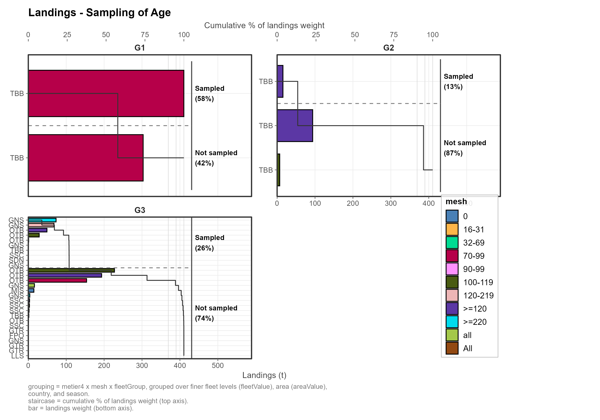
age_allocation_02.png.
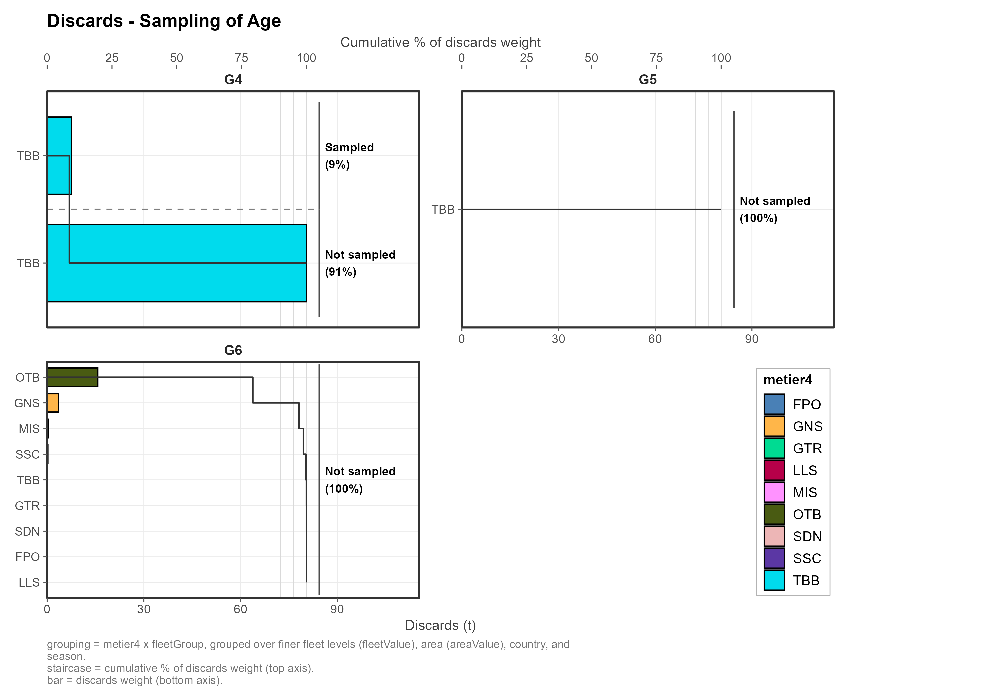
age_allocation_14.png.
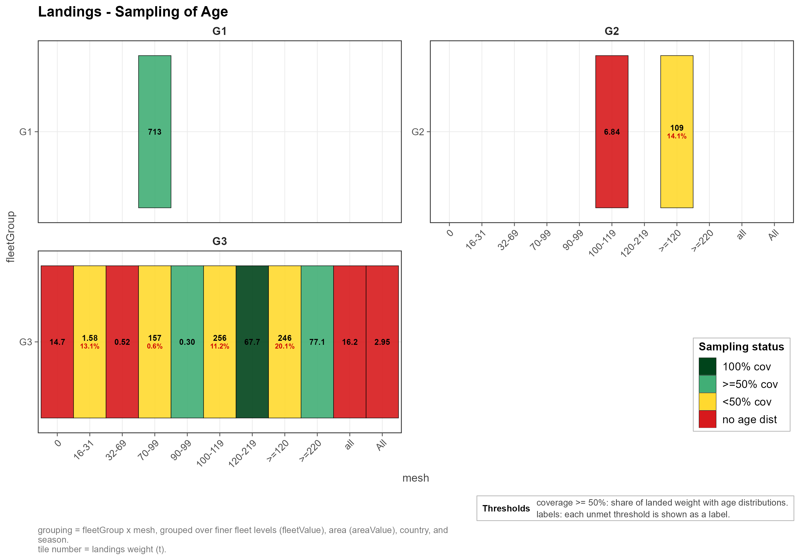
age_allocation_04.png.
4.3 The groups
There are six groups (Table 6), written in model_age_allocation.R:
(this code is no longer in the script)
(this code is no longer in the script)
| Group | Allocation strata | Donors | Why |
|---|---|---|---|
| G1_TBB_LAN | Landings of the beam trawls | The same strata | Enough samples (coverage and fish measured) in its main mesh: its own distribution. |
| G2_GTR_GNS_LAN | Landings of the nets | The same strata | Enough samples in its main mesh: its own distribution. |
| G3_REST_LAN | Landings of the other metiers | All the landings | Too little sampled: it draws on all the landings. |
| G4_TBB_DIS | Discards of the beam trawls | The same strata | Well sampled: its own distribution. |
| G5_REST_DIS | The other discards and the BMS | All the discards and the BMS, beam trawls included | Too little sampled: it draws on all the discards. |
| G6_IBC | The incidental bycatch fleet, all catch categories | All the samples | No catch: nothing to allocate. |
4.4 What the allocation did
Every catch row got a distribution (none is left without one): 46 distributions are sampled and 252 were estimated. By weight, 39% of the landings and 9% of the discards have a sampled distribution; the rest takes the shape of its donors (Table 7).
| Group | Catch rows | Sampled distributions | Estimated distributions | Catch with a sampled distribution (t) | Catch with an estimated distribution (t) | Sampled (%) |
|---|---|---|---|---|---|---|
| G1 | 14 | 4 | 10 | 410.4 | 303.0 | 58 |
| G2 | 26 | 5 | 21 | 15.4 | 100.6 | 13 |
| G3 | 244 | 36 | 208 | 220.6 | 619.6 | 26 |
| G4 | 14 | 1 | 13 | 7.5 | 80.5 | 9 |
| Total | 298 | 46 | 252 | 653.8 | 1,103.7 | 37 |
The numbers at age of the landings show the groups: the beam trawls land fish of 30 to 40 cm, the nets fish around 50 cm, and the other gears a broad range; where no samples were taken the distribution is estimated (hatched) from the donors and scaled to the landings of the stratum (Figure 13). The discards are smaller fish, and only the beam trawls have sampled distributions of their own (Figure 14).
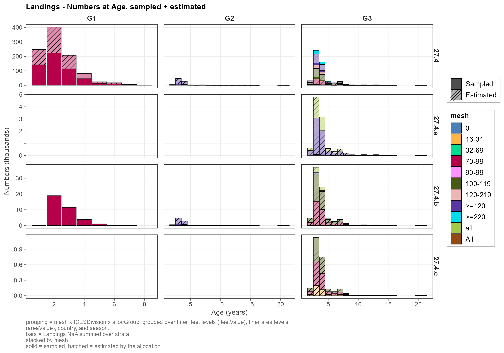
age_allocation_22.png.
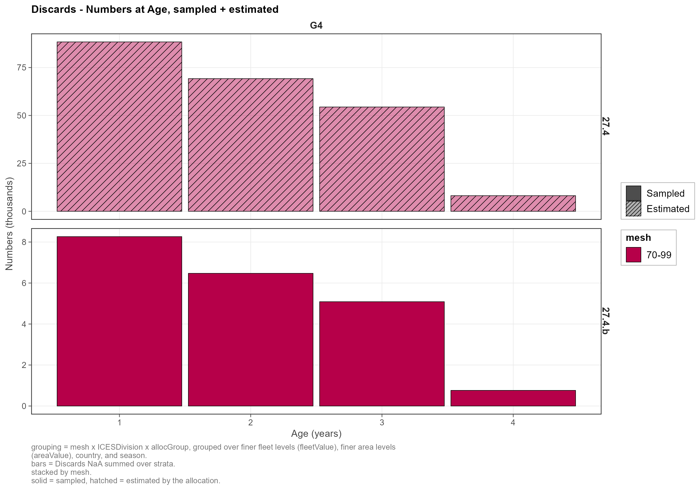
age_allocation_25.png.
The mean weight at age of the estimated distributions follows that of the sampled ones (Figure 15): the allocation keeps the relation between age and weight of each group.
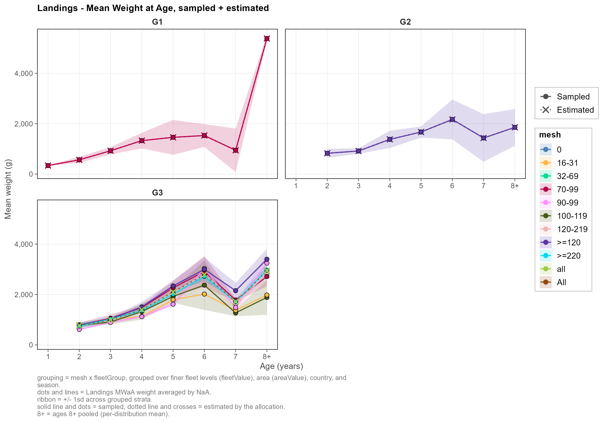
age_allocation_27.png.
5 Aggregation and the two final tables
5.1 The aggregation functions
The two final tables are made by catchCombined() and distributionsCombined() of rcef, in output.R. Both add up over the strata and take the same grouping: the year, the working group and the stock, the catch category, and what else the stock assessment asks for. Here the catch is not split further, so the grouping is the catch category. If the assessment asks for the catch by season, area or fleet, these are added to the grouping of both functions, since every distribution needs the catch it belongs to in the CC.
catchCombined() adds up the working group’s catch (originType_catch = "WGEstimate", weights) of the raised catch, in tonnes, by catch category, and writes the header of the file: the year of the working group, the version and its description, whether the year is the calendar year and, if it is not, the day the model year starts. The sampling behind each total (PSU, numPSUs, numTrips) is taken from the columns of the catch with those names and summed over the rows added up; a raised row, whose rate was borrowed from a group, leaves its counts out. A raised row with no ratio (no donor) adds up as nothing.
distributionsCombined() takes the distributions of the allocation. It links each distribution to the catch it describes through its domain: a sampled one through domainBiology, an estimated one through the domain the allocation made up for the stratum (a name that starts with [alloc]_), so every stratum, raised or not, sampled or estimated, finds its distribution. The numbers at age are added up over all the strata of the category, in thousands of fish (unit NE3), and the mean weight at age is the average of the strata’s mean weights, in g, weighted by their numbers at that age (weighting = "NumberAtAoL"). The result has the long format of the SCF: for each age class a Number row (value type Total) and a WeightLive row (value type Mean); a class with no fish is left out. The function warns when it finds a catch weight with no distribution, or a distribution with fish and no catch weight. The sampling of each class (PSU, numPSUs, numTrips, numMeasurements) is that of the sampled distributions it is made of, each counted once; the estimated ones were borrowed and have none.
(this code is no longer in the script)
(this code is no longer in the script)
The same numbers can be had with one column per age class (catchAtAoLAggregation() and meanWoLatAoLAggregation(), also in output.R) for a look; they are not part of the SCF.
5.2 Catch Combined
The CC has one row per catch category (Table 8): 1,669.5 t of landings and 107.8 t of discards, 1,777.3 t in all. The row of the landings below the minimum size (BMS) is 0.0 t. The fields of the SCF that the catch is not split by (season, area, fleet) and the variance are empty. The sampling behind the totals (PSU, numPSUs, numTrips) is the sum over the strata that report it, and is empty for a catch category with none.
output/SCF_CC.csv): one column for each row of the file, named by its catch category, with the fields that are filled; the others are empty.
| Field | BMS | Dis | Lan |
|---|---|---|---|
| recordType | CC | CC | CC |
| version | 1 | 1 | 1 |
| versionDescription | RDBESstockCoord test | RDBESstockCoord test | RDBESstockCoord test |
| calendarYear | Y | Y | Y |
| year | 2025 | 2025 | 2025 |
| workingGroup | WGNSSK | WGNSSK | WGNSSK |
| stock | tur.27.4 | tur.27.4 | tur.27.4 |
| variableType | WeightLive | WeightLive | WeightLive |
| variableUnit | t | t | t |
| total | 0.0 | 107.8 | 1,669.5 |
| numTrips |
5.3 Distributions Combined
The DC has 44 rows: 18 age classes for the landings and 4 for the discards, each with a Number row and a WeightLive row (Table 9). Figure 16 draws it: the numbers at age, in thousands of fish, and the mean weight at age, in g, for the landings and the discards.
output/SCF_DC.csv): the first two age classes of each catch category, a Number row (thousands of fish, NE3) and a WeightLive row (mean weight, g) for each. All rows have the distribution type ageTotal, in mm. The file has the rest of the fields too: the header, and the sampling behind each row (PSU, numPSUs, numTrips, numMeasurements); the ones the data does not fill are empty.
| catchCategory | distributionClass | variableType | variableUnit | valueType | value |
|---|---|---|---|---|---|
| Dis | 1 | WeightLive | g | Mean | 321.520 |
| Dis | 1 | Number | NE3 | Total | 96.633 |
| Dis | 2 | WeightLive | g | Mean | 379.310 |
| Dis | 2 | Number | NE3 | Total | 75.687 |
| Lan | 1 | WeightLive | g | Mean | 339.010 |
| Lan | 1 | Number | NE3 | Total | 247.466 |
| Lan | 2 | WeightLive | g | Mean | 586.611 |
| Lan | 2 | Number | NE3 | Total | 466.057 |
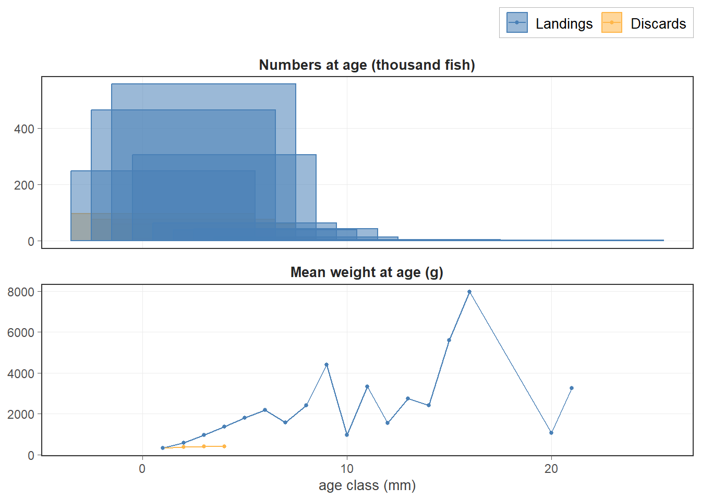
5.4 The check before uploading
The SCF compares the catch of the CC with the sum of products of the DC (the numbers times the mean weights, over the classes) and rejects a total more than 20% off. Here the two are at most 18.4% apart (Table 10).
| Catch category | Sum of products of the DC (t) | Catch of the CC (t) | Sum of products over catch |
|---|---|---|---|
| Dis | 88.0 | 107.8 | 0.816 |
| Lan | 1,681.5 | 1,669.5 | 1.007 |
The two files are output/SCF_CC.csv (3 rows) and output/SCF_DC.csv (44 rows). Empty fields are left empty, and the two are uploaded together.
6 How this report is made
report.R renders report.qmd to html and pdf in report/. The report reads the files the other scripts leave (data/, model/, output/) and shows the figures they saved in output/figures/2_discard_raising/ and output/figures/3_age_allocation/; it draws only the last figure and computes only the small tables. The scripts are run in this order: data.R, model_discard_raising.R, model_age_allocation.R, output.R and then report.R. A figure or a table is as current as the script that made its file.